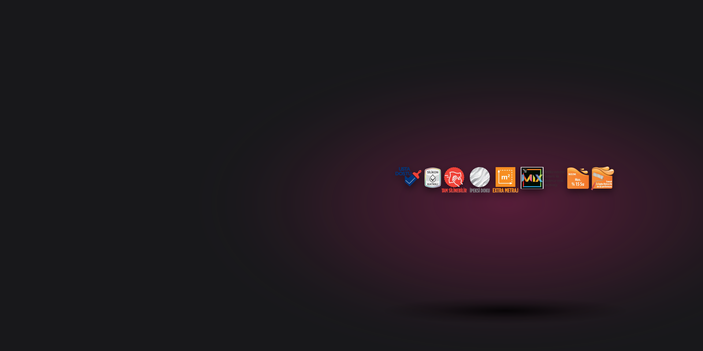
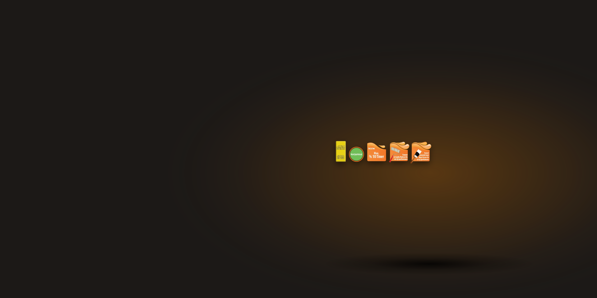

Fawori Kozmik İpek
İpeksi Mat Dokulu
•
Üstün Silinebilir
•
Betek Kimya Güvencesi
Şantiye & Bayi Liste Fiyatı Al
Fenomen Saf Akrilik
Ağır Ege Sahil Şartlarına Dayanıklı
•
Yüksek UV Kalkanı
•
Solmaz Renkler
Hemen WhatsApp ile Teklif Al
Fawori Optimix® Yalıtım
Karbonlu & Beyaz EPS Levhalar
•
Komple Mantolama Sistemi
•
%50+ Enerji Tasarrufu
Proje & Metraj Teklifi İste

Marin Vernik & Sentetik
Aşınma & Çizilme Direnci
•
Ayna Parlaklığında Son Kat
•
Ahşap & Metal Koruma
Toptan Proje Teklifi Al
PERVAN FAWORİ DAĞITIM
Katalog Departmanları

Fawori Dönüşüm Astarı
........................................
İç Cephe Astarı
Akrilik kopolimer emülsiyon esaslı, beyaz pigmentli iç cephe astar boyasıdır. Brüt beton, düz veya pürüzlü her cins sıvalı, mineral esaslı yüzeylerde, rengini kaybetmiş kendini taşıyabilen silikon veya akrilik eski boyalı yüzeylerde astar olarak uygulanır. Eski boyalı yüzeylerde özellikle sentetik boyadan su bazlı boyaya geçişlerde kullanılır
Kumlu yapısıyla, boya ve yüzey arasında bağlayıcı köprü kurar, aderansı arttırır, boya sarfiyatını azaltır. Beyaz pigmentli, yüksek örtme ve aderans (yapışma) özelliği sayesinde boya ve zaman tasarrufu sağlar.
Teknik Detay

Fawori Konsantre Astar
........................................
İç Cephe Astarı
Su bazlı, yüksek penetrasyon ve aderansa sahip, konsantre astardır. İpek ve Yarı Mat boyalarda 1/7 , Mat ve Plastik boyalarda 1/10 oranında inceltilerek kullanılır. Alçı, kireç badana, özelliğini yitirmiş düşük kaliteli emici plastik boyalı yüzeyler, gaz beton vb. çok emici ve/veya tozuma karakterli yüzeylerde uygulanır.
Boya ile yüzey arasında bağlayıcı köprü kurarak boyanın yüzeye daha iyi tutunmasını sağlar. Uygulandığı yüzeyin emiciliğini azaltır, boyanın erken kurumasını engeller ve farklı emiciliğe sahip yüzeylerde son kat boyada oluşabilecek renk dalgalanmalarını önler. Boya sarfiyatını azaltarak ekonomi sağlar.
Teknik Detay

Fawori Kozmik İpek
........................................
İpek & Soft Mat
Silikon esaslı, ipeksi bir dokuya sahip, tam silinebilir dekoratif su bazlı iç cephe boyasıdır. İç cephe eski-yeni boyalı/sıvalı tavan-duvar, alçı, macun, alçıpan, betopan, OSB, cam tekstili yüzeyler üzerine uygun astarlama işlemi tamamlandıktan sonra uygulanır. Yapı malzeme standartlarına uygun uygulama yapıldığında çatlama, kabarma ve dökülme yapmaz. Su bazlı olması nedeni ile rahatsız edici bir kokusu yoktur, çevre dostudur.
Su bazlı, silikon esaslı•İpeksi dokuya sahip•Tam silinebilen
Teknik Detay

Fawori Macun
........................................
Macun & Dolgu
Akrilik kopolimer esaslı, yüksek doldurma gücüne sahip, beyaz renkli ahşap macunudur. Özellikle ahşap yüzeyler için formüle edilmiş olup yeni boyanacak yüzeylerde, eski boyalı ve/veya sıvalı yüzeylere boya uygulamalarında dolgu ve yüzey düzeltme macunu olarak kullanılır.
Yüksek dolgu gücüne sahiptir, yüzeye iyi tutunur, zımparalama kolaylığı sunar ve çabuk kurur.
Teknik Detay

Fawori Panel Kapı Boyası
........................................
Panel Kapı Boyası
Akrilik reçine esaslı, örtücü ve koruyucu su bazlı son kat panel kapı boyasıdır. Amerikan panel, masif ahşap ve kaplamalı ahşap kapılar üzerine uygulanabilir. Ham yüzeyin boyanmasında ya da boya üstü boya uygulamasında kullanılır. Boya üstü boya uygulamalarında, su/solvent bazlı boya ve vernikler üzerine uygulanabilir. Yatay ahşap zemin ve yaya trafiği olan yüzeylerde kullanılmamalıdır.
Su bazlı, çevre dostu•Yarı mat parlaklıkta•Sararmaya dirençli
Teknik Detay

Fawori Plastik
........................................
Silikonlu & Plastik
Akrilik kopolimer emülsiyon esaslı, dekoratif iç yüzey plastik boyasıdır. İç cephe eski-yeni boyalı/sıvalı tavan-duvar, alçı, macun, alçıpan, betopan, OSB, cam tekstili yüzeyler üzerine uygun astarlama işlemi tamamlandıktan sonra uygulanır.
Teknik Detay

Fawori Pro Astar
........................................
İç Cephe Astarı
Akrilik kopolimer emülsiyon esaslı, beyaz pigmentli, ince dokulu iç cephe astar boyasıdır. Beton, brüt beton, ham sıvalı yüzeyler, mdf, betopan, OSB, tuğla, kendini taşıyabilen eski boyalı (su-solvent bazlı)ve macun uygulanmış yüzeylerde uygulanır. Eski boyalı yüzeylerde özellikle su bazlı boya üzerine yine su bazlı boya uygulanacaksa kullanılır.
Son kat boyanın örtücülüğünü arttırır ve yüzeye daha iyi yapışmasını sağlar. İnce dokusu sayesinde üzerine uygulanacak Fawori Fenomen İç Cephe, Master İpek, Silikonlu İpek gibi parlaklık ve dokunun önemli olduğu su bazlı boyalar için ideal bir yüzey oluşturur. Yüzeyin emiş gücünü dengeler, boyanın eşit dağılımını sağlar.
Teknik Detay

Fawori Seramik Üstü Astar
........................................
İç Cephe Astarı
Polimer modifiye reçine esaslı seramik üzeri seramik uygulamalarında kullanılabilecek astar malzemesidir.
Pürüzlü bir yüzey oluşturur•Yapışma mukavemetini arttırır•Daha iyi tutunma sağlar
Teknik Detay

Fawori Silikonlu Mat
........................................
Silikonlu & Plastik
Silikonlu akrilik kopolimer esaslı, dekoratif birinci sınıf son kat emülsiyon boyasıdır. İç cephe eski-yeni boyalı/sıvalı tavan-duvar, alçı, macun, alçıpan, betopan, OSB, cam tekstili yüzeyler üzerine uygun astarlama işlemi tamamlandıktan sonra uygulanır.
Su bazlı, silikon esaslı•Mat görünümlü•Nefes alabilen
Teknik Detay

Fawori Şeffaf Astar
........................................
İç Cephe Astarı
Kullanıma hazır, özel emülsiyon reçine esaslı, şeffaf iç cephe astarıdır. Alçı, kireç badana, özelliğini yitirmiş düşük kaliteli emici plastik boyalı yüzeyler, gaz beton vb. çok emici ve/veya tozuma karakterli yüzeylerde uygulanır.
Boya ile yüzey arasında köprü kurar. Penetrasyon özelliğinden dolayı uygulama yüzeyinin iç derinliklerine kadar nüfuz ederek üzerine gelecek boya tabakasının uygulama yüzeyi ile bütünleşmesini sağlar. Yüzey emiciliğini önlediği için, özellikle sıcak havalarda boyanın erken kurumasını önler ve boya sarfiyatını azaltır.
Teknik Detay

Fawori Tavan Extra
........................................
Tavan Boyası
Akrilik kopolimer emülsiyon esaslı, dekoratif iç yüzey beyaz tavan boyasıdır. Saten alçılı, macunlu, alçıpan yüzeyler ve tozuma karakterli olmayan eski boyalı veya sıvalı iç cephe tavan yüzeyler üzerine kullanılır.
Su bazlı - Mat görünümlü - Extra beyaz - Extra örtücü - Kolay uygulanabilen - Nefes alabilen
Teknik Detay

Fawori Ultra Soft Mat
........................................
İpek & Soft Mat
Silikon esaslı, soft mat parlaklığa sahip, tam silinebilir dekoratif su bazlı iç cephe boyasıdır. İç cephe eski-yeni boyalı/sıvalı tavan-duvar, alçı, macun, alçıpan, betopan, OSB, cam tekstili yüzeyler üzerine uygun astarlama işlemi tamamlandıktan sonra uygulanır. Yapı malzeme standartlarına uygun uygulama yapıldığında çatlama, kabarma ve dökülme yapmaz. Su bazlı olması nedeni ile rahatsız edici bir kokusu yoktur, çevre dostudur.
Su bazlı, silikon esaslı•Soft mat parlaklığa sahip•Pürüzsüz görünümlü
Teknik Detay

Tempo Binder (Konsantre Astar)
........................................
İç Cephe Astarı
İpek parlaklığında ve daha parlak boyalarda 1 ölçek astar, 7 ölçek su ile inceltilir. Mat/Plastik boyalarda sulandırma oranının 1/10’a çıkartılmalıdır.
Yüksek penetrasyon•Boya ile yüzey arasında köprü görevi görür•Tutunmayı arttırır
Teknik Detay

Tempo Özel İpek Silikonlu
........................................
Silikonlu & Plastik
Silikonlu, silinebilme özelliği olan, ipek mat dokuda dekoratif son kat su bazlı iç cephe boyasıdır.
Su bazlı, silikon esaslı•Silinebilir•Yüksek örtücülük
Teknik Detay

Tempo Özel Plastik
........................................
Silikonlu & Plastik
Akrilik esaslı, mat görünümlü, dekoratif iç yüzey plastik boyadır.
Su bazlı, akrilik esaslı•Mat görünüm•Su kaldırır yapıda
Teknik Detay

Tempo Özel Tavan
........................................
Tavan Boyası
Akrilik esaslı, yüksek beyazlığa sahip, dekoratif beyaz tavan boyasıdır.
Su bazlı akrilik esaslı•Yüksek nefes alma özelliği•Mat görünüm
Teknik Detay

Tempo Silikonlu Mat
........................................
Silikonlu & Plastik
Akrilik esaslı, silikon katkılı, mat görünümlü, dekoratif iç cephe son kat duvar boyasıdır.
Su bazlı, silikon esaslı•Mat görünümlü•Yüksek örtücülük
Teknik Detay

Tempo Universal Astar
........................................
İç Cephe Astarı
Akrilik kopolimer esaslı beyaz pigmentli astar boyadır. Çok iyi örtme ve aderans gücüne sahiptir.
Boya ile yüzey arasında köprü görevi görür•Tutunmayı arttırır•Boya sarfiyatını azaltrı
Teknik Detay

Fawori Premium Dış Cephe Astarı
........................................
Dış Cephe Astarı
Silikonlu, akrilik kopolimer emülsiyon esaslı dış cephe astarıdır. Brüt beton, düz veya pürüzlü her cins sıvalı, mineral esaslı yüzeylerde, rengini kaybetmiş kendini taşıyabilen silikon veya akrilik esaslı boyalı yüzeylerde astar olarak kullanılır.
Boya ile yüzey arasında bağlayıcı köprü kurar•Aderansı arttırır•Boya sarfiyatını azaltır
Teknik Detay

Fawori Premium Silikonlu Dış Cephe Boyası
........................................
Silikonlu Dış Cephe
Akrilik kopolimer emülsiyon esaslı mat görünümlü son kat dış cephe boyasıdır. Sıva, serpme sıva, tarak mozaik, beton, brüt beton, betopan, mdf, OSB, rengini kaybetmiş kendini taşıyabilen eski boyalı, terasit tipi yüzeylerde uygulanır.
Silikonlu•Mat görünümlü•Canlı renklere sahip
Teknik Detay

Fawori Silikonlu Grenli Kaplama
........................................
Grenli Dış Kaplama
Akrilik kopolimer emülsiyon esaslı, silikon katkılı, rulo ile uygulanan ve mercan rulo ile desen verilen son kat grenli dış cephe kaplamasıdır. Sıva, beton, brüt beton, betopan, MDF, OSB, rengini kaybetmiş kendini taşıyabilen eski boyalı yüzeylerde uygulanır.
Silikonlu•Mat görünümlü•Su itici
Teknik Detay

Fenomen Saf Akrilik Dış Cephe Boyası
........................................
Saf Akrilik Dış Cephe
%100 saf akrilik, esnek yapıda (elastomerik), ipeksi mat dokuda, extra su itici dış cephe boyasıdır. Sıva, serpme sıva, tarak mozak, silme mozak, beton, brüt beton, betopan, MDF, OSB, mineral esaslı son kat dekoratif kaplamalar, son kat silikonlu dekoratif kaplamalar, rengini kaybetmiş, kendini taşıyabilen eski boyalı, terasit tipi yüzeylere uygulanabilir.
%100 Saf Akrilik•İpek mat görünümlü•Göz alıcı, parlak renklere sahip
Teknik Detay

Tempo Akrilik Dış Cephe Boyası
........................................
Silikonlu Dış Cephe
Akrilik kopolimer emülsiyon esaslı, mat görünümlü, UV ısınlarına dayanıklı, dekoratif, son kat dış cephe boyasıdır. Sıva, beton, serpme sıva, brüt beton, betopan, OSB, MDF ve mineral yüzeylerde, ayrıca yenileme için rengini kaybetmiş, kendini taşıyabilen silikon veya akrilik esaslı boyaların üzerine uygulanabilir.
Yüksek aderans gücü sayesinde yüzeylere maksimum tutunma sağlar.•UV direnci ve iklim koşullarına dayanım sağlar.•Nefes alma kabiliyeti sayesinde yüzeyde oluşan nemin dışarı atılmasını sağlar.
Teknik Detay

Tempo Brüt Beton Astarı
........................................
Dış Cephe Astarı
Brüt beton üzerine yapılacak alçı ve çimento esaslı sıva uygulamalarından önce yüzey aderansını artırmak amacıyla kullanılan polimer modifiye reçine esaslı iç/dış cephe astarıdır. Brüt beton yüzeylere alçı ve çimento esaslı harç uygulanmasından önce uygulanır.
Brüt beton duvar, kolon, tavan gibi yüzeylerde aderans arttırıcı olarak kullanılır.•Üzerine uygulanacak ürünün performansını olumlu yönde etkiler.•Brüt beton üzerine yapılacak alçı ve çimento esaslı sıva uygulamalarından önce yüzey aderansını artırmak amacıyla kullanılmaktadır.
Teknik Detay

Tempo Özel Tekstürlü Dış Cephe Kaplaması
........................................
Grenli Dış Kaplama
Akrilik kopolimer esaslı, elyaf katkılı ve silikonlu, dekoratif, tekstürlü dış cephe kaplamasıdır. Kendini taşıyabilen sıva, beton , OSB, MDF , ve diğer mineral yüzeylere, eski boyalı yüzeylere desen vermek amacıyla veya dekoratif amaçla uygulanır.
İçerdiği özel elyaf sayesinde atmosfer koşullarına, kirliliğe, U.V. ışınlarına dayanıklıdır.•Nefes alma yeteneğine sahip olup, duvardaki nemin dışarı atılmasına yardımcı olur.•Su itici özelliği sayesinde suya karşı dirençlidir.
Teknik Detay

Tempo Silikonlu Dış Cephe Astarı
........................................
Dış Cephe Astarı
Silikon ve akrilik emülsiyon esaslı, pigmentli, aderans gücü yüksek, yapı son kat dış cephe astarıdır. Düz veya pürüzlü her cins sıvalı, mineral esaslı yüzeylerde, brüt beton üzerine, rengini kaybetmiş kendini taşıyabilen silikon veya akrilik esaslı eski boyalı yüzeylerde astar olarak kullanılır.
Aderans gücü yüksektir, boya ile yüzey arasında bağlayıcı köprü kurar.•Boya sarfiyatını azaltır.•Nefes alma kabiliyeti sayesinde yüzeyde oluşan nemin dışarı atılmasını sağlar.
Teknik Detay

Fawori Marin Yat Vernik
........................................
Yat Vernik & Ahşap
Üretan alkid reçine kombinasyon esaslı, yüksek parlaklıkta mükemmel üst yüzey oluşturan bir yat verniktir. Deniz araçlarının ahşap yüzeylerinde ve binaların her türlü ahşap iç ve dış yüzeylerinde dekoratif ve koruyucu olarak ahşabın doğal görünümünü bozmadan kullanabileceğiniz UV dayanımlı parlak verniktir.
Yapısındaki UV absorbanları sayesinde ahşabı uzun süre korur. Sararmaya karşı dirençlidir. Ahşabın rengini şeffaf yapısından dolayı değiştirmez. Doğal görünümünü atmosfer koşullarına, neme ve suya karşı koruyan, mükemmel yapışan iç ve dış cephe verniğidir. Mükemmel yayılma gücü ile zaman ve işçilikten tasarruf sağlar.
Teknik Detay

Fawori Parke Cilası
........................................
Yat Vernik & Ahşap
Tek komponentli modifiye üretan alkid esaslı parlak parke verniğidir. Mukavemet gerektiren iç cephe ahşap döşeme, merdiven ve parke yüzeylerde güvenle kullanabileceğiniz bir cam ciladır.
Yüksek ve kalıcı parlaklığa sahiptir. Uygulandığı iç cephe ahşap yüzeylerin doğallığını bozmaz ve renk değişikliği yapmaz (şeffaf renktedir). Sararmaya karşı dirençli olup, sert bir film oluşturur. Evlerde kullanılan sıvı temizlik malzemelerine dayanıklıdır, fırça izi oluşturmaz.
Teknik Detay

Fawori Premium Sentetik Boya
........................................
Sentetik Yağlı Boya
Modifiye alkid reçine esaslı, yüksek ve kalıcı parlaklıkta, örtme ve yapışması mükemmel son kat parlak sentetik boyadır. İç ve dış mekanlarda ahşap, demir-çelik-sac, beton, brüt beton, sıva, betopan, alçıpan, OSB, mdf yüzeylerde ve mobilyalarda uygun astar ile güvenle kullanılır.
Parlak görünümlü•Silinebilir•Rahat taranır, fırça ve rulo izi bırakmaz
Teknik Detay

Fawori Sentetik Antipas
........................................
Pas Önleyici Antipas
Sentetik alkid reçine kombinasyonlu pas önleyici antikorozif yüzey astarıdır. Her türlü demir-çelik-sac yüzeylerin korozyonuna engel olmak için kullanılır.
Alkid ve pas önleyici antikorozif yapıdaki pigmentlerin özel kombinasyonu ile demir-çelik-sac yüzeyleri paslanmaya karşı korur, uygulanan yüzeyle çok iyi aderans oluşturur.
Teknik Detay

Fawori Sentetik Astar
........................................
Sentetik Yağlı Boya
Modifiye alkid reçine esaslı astar boyasıdır. İçeride ve dışarıda her cins ahşap, beton, brüt beton, sıva, betopan, alçıpan, OSB, mdf, demir-çelik-sac yüzeylerde son kat boya uygulamasından önce güvenle kullanılır.
Rahat tarama ve örtme gücü sayesinde işçilikten tasarruf sağlar. Düzgün bir üst yüzey oluşturur, yüzeyi son kat uygulamaya hazır hale getirir.
Teknik Detay

Fawori Sentetik Tiner
........................................
Sentetik Tiner
Solvent bazlı ürünlerde kullanılan incelticidir. Sentetik esaslı tüm boya, vernik ve astarların uygulamalarında inceltici olarak güvenle kullanılır. Ayrıca sentetik esaslı boya uygulama araç ve gereçlerinin (fırça, rulo, uygulama tabancası, spatül vb.) temizlik işlerinde kullanıldığı gibi yeni boyanacak demir-çelik yüzeylerin boya öncesi mevcut yağ, pas tozları gibi kirliliklerin temizlenmesinde kullanılır.
Teknik Detay

Fawori Soğuk Yol Çizgi Boyası
........................................
Yol Çizgi Boyası
Yol ve kaldırım işaretlemeleri için kullanılan yüksek performanslı yol çizgi boyasıdır. Yol çizgilerinin işaretlenmesinde asfalt yüzeylerde, kaldırım taşlarının boyanmasında ve otopark işaretlemelerinde kullanılır. Beton yüzeylerde kullanılacaksa, betonun uygulamadan en az 1 ay önce dökülmüş olması yüzeyinin çentiklenerek pürüzlendirilmesi ve uygulamanın mutlaka havasız püskürtme (airless) ile yapılması gereklidir. Eski boyalı yüzey (su bazlı yol çizgi boyası vb.) üstüne uygulamalarda mutlaka bir miktar deneme yapılması tavsiye edilir. UYARI: Helikopter perdah makinesi ile yüzeyi düzeltilmiş parlak betonda ve daha önce epoksi kaplama bulunan yüzeylerde kullanılmamalıdır.
» Solvent bazlı•» Mat görünümlü•» Yüksek yapışma gücünde
Teknik Detay

Fawori Wood Stain Dekoratif Ahşap Verniği
........................................
Sentetik Yağlı Boya
Ahşap yüzeyler için geliştirilmiş alkid bağlayıcı esaslı, şeffaf yapıda, parlak görünümlü dekoratif ve koruyucu amaçlı kullanılan bir son kat ahşap verniğidir. Her türlü ahşap doğrama cephe kaplaması ve ahşap bahçe mobilyasının boyanmasında kullanılır. Arı kovanları, saunalardaki ahşap yüzeylerde, ambalajsız gıda maddelerinin barındırıldığı ahşaplar üzerinde, yatay ahşap zemin ve yaya trafiği olan yüzeylerde kullanılmamalıdır. Ayrıca bünyesinde yüksek miktarda doğal yağ içeren teak, iroko vb. ahşap yüzeyler üzerine uygulanmamalıdır.
Özel katkı maddeleri sayesinde yüzeyde mantarlara karşı koruyucudur. Ahşabı suya ve UV ışınlarına karşı korur. Ahşaba penetrasyonu kolaydır. Aşınmaya karşı dirençlidir. Yüzey üzerinde film tabakası oluşturur.
Teknik Detay

Fawori Yol Çizgi Boyası Tineri
........................................
Sentetik Tiner
Yüksek çözme gücüne sahip, yol çizgi boyası tineridir. Fawori Soğuk Yol Çizgi Boyası’nın inceltilmesinde, boya uygulama araç ve gereçlerinin temizlik işlerinde kullanılır.
Teknik Detay

Klasik Fırça
........................................
Sentetik Yağlı Boya
» Epoksi Yapıştırıcılı » Solventten etkilenmez. » Kesinlikle kıl vermez. Doğal siyah kıldan ve plastik sap kullanılarak üretilmiştir.
Teknik Detay

Fawori Optimix 035 Beyaz EPS Isı Yalıtım Levhası
........................................
Beyaz EPS Levha
Fawori 035 Beyaz EPS Isı Yalıtım Levhası, 20-22 kg/m3 yoğunluklu TS EN 13163 – EPS Ürün Üretim ve TS EN 13499 Isı Yalıtım Sistem standartlarına uygun olarak üretilen polistiren esaslı bir ısı yalıtım levhasıdır.
Isı iletkenlik katsayısı (λD = 0,035 W/mK)•Yüksek su buharı geçirgenliğine (μ=30-70) sahiptir. Yapılarda nem, rutubet ve küf oluşumunu büyük ölçüde azaltır.•Yüzeylere dik çekme dayanımının yüksek olması sayesinde, rüzgar yüklerine karşı daha dayanıklıdır.
Teknik Detay

Fawori Optimix Beton Dübeli - Çelik Çivili
........................................
Yalıtım Dübeli
Taşyünü levha uygulamalarında 9 cm’lik geniş kafa çapıyla basma alanını genişleterek mükemmel bir tutunma sağlar. Beton, dolu tuğla, delikli tuğla, gaz beton, hafif betondan mamul dolu ve boşluklu bloklarda kullanılır.
Tutunma derinliği : ≥ 6,45 cm•Delik derinliği : ≥ 7,45 cm•Matkap çapı : 8,0 mm (Boşluklu Yüzeyde) - 9,0 mm (Dolu Yüzeyde)
Teknik Detay

Fawori Optimix Dekoratif Mineral Kaplama - Çizgi
........................................
Dekoratif Mineral Sıva
Çimento esaslı, hafif, yüzeyde doğal bir doku oluşturan, son kat iç ve dış yüzey kaplamasıdır.
Çimento esaslı, yüksek buhar geçirgenliğine sahip dış cephe kaplamasıdır.•Dış hava şartlarına dayanıklı ve su iticidir. Rutubet birikimini önler.•Hafif olması sayesinde uygulaması ve desen verilmesi kolaydır.
Teknik Detay

Fawori Optimix Dekoratif Mineral Kaplama - İnce Tane
........................................
Dekoratif Mineral Sıva
Çimento esaslı, hafif, yüzeyde doğal bir doku oluşturan, son kat iç ve dış yüzey kaplamasıdır.
Çimento esaslı, yüksek buhar geçirgenliğine sahip dış cephe kaplamasıdır.•Dış hava şartlarına dayanıklı ve su iticidir. Rutubet birikimini önler.•Hafif olması sayesinde uygulaması ve desen verilmesi kolaydır.
Teknik Detay

Fawori Optimix Dekoratif Mineral Kaplama - Tane
........................................
Dekoratif Mineral Sıva
Çimento esaslı, hafif, yüzeyde doğal bir doku oluşturan, son kat iç ve dış yüzey kaplamasıdır.
Çimento bazlı olması ve özel formülü sayesinde mükemmel bir buhar geçirgenliğine sahip olup ısı yalıtım sistemleri için ideal bir dış cephe kaplamasıdır.•Dış hava şartlarına dayanıklı ve su iticidir. Rutubet birikimini önler.•Hafif olması sayesinde uygulaması ve desen verilmesi kolaydır.
Teknik Detay

Fawori Optimix Dekoratif Mineral Kaplama Astarı
........................................
Dekoratif Mineral Sıva
Fawori Optimix Dekoratif Mineral Kaplama Astarı yüksek aderans gücüne sahip, akrilik kopolimer emülsiyon esaslı, beyaz renkte özel bir astardır.
Yüksek aderans gücü vardır.•Uygulama yüzeyi ile Fawori Optimix Dekoratif Mineral Kaplama Astarı arasında özel bir tutunma oluşturur.•Eski yüzeydeki kir ve lekelerin Fawori Optimix Dekoratif Mineral Kaplama Astarının üzerine çıkmasını engeller.
Teknik Detay

Fawori Optimix Dübel - Plastik Çivili
........................................
Yalıtım Dübeli
Optimix Isı Yalıtım Levhalarının yüzeylere sabitlenmesi ve rüzgar vakumlama yüklerine karşı sistemin korunması amacı ile kullanılır. Delikli tuğla, gaz beton ve dolu tuğlada kullanılabilir.
Tutunma derinliği : ≥ 3 cm•Delik derinliği : ≥ 4 cm•Matkap çapı : 10 mm (Boşluklu Yüzeyde) - 12mm (Dolu Yüzeyde)
Teknik Detay

Fawori Optimix EPS Isı Yalıtım Levhası (Beyaz)
........................................
Beyaz EPS Levha
Fawori Optimix Beyaz EPS Isı Yalıtım Levhası, TS EN 13163 – EPS Ürün Üretim Standardı'na uygun olarak üretilen polistiren esaslı bir ısı yalıtım levhasıdır.
Isı iletkenlik katsayısı, λD = 0,040 W/mK’dir.•Yüksek su buharı geçirgenliğine sahiptir.(μ=20-40) Yapılarda nem, rutubet ve küf oluşumunu engeller.•Yapılarda tüm mekanik yüklemelere dayanabilecek yeterliliktedir. Genleşme, büzülme ve duvarların çalışmasından kaynaklanan sıva, boya ve kaplama çatlaklarının oluşmasını önler.
Teknik Detay

Fawori Optimix EPS Isı Yalıtım Levhası (Karbonlu)
........................................
Karbonlu EPS Levha
Fawori Optimix Karbonlu EPS Isı Yalıtım Levhası, TS EN 13163 – EPS Ürün Üretim Standardı'na uygun olarak üretilen polistiren esaslı bir ısı yalıtım levhasıdır.
Isı iletkenlik katsayısı, λD = 0,034 W/mK’dir.•Yüksek su buharı geçirgenliğine sahiptir.(µ=20-40) Yapılarda nem, rutubet ve küf oluşumunu engeller.•Yapılarda tüm mekanik yüklemelere dayanabilecek yeterliliktedir. Genleşme, büzülme ve duvarların çalışmasından kaynaklanan sıva, boya ve kaplama çatlaklarının oluşmasını önler.
Teknik Detay

Fawori Optimix F160 Donatı Filesi
........................................
Donatı Filesi
4x4 elek aralığında, alkali dayanımlı, özel kaplamalı cam iplik dokuma filesidir.
Mekanik mukavemet : Alkali şartlandırma sonrası mukavemet kaybı max. % 50 (atkı ve çözgüde)•Alkali şartlandırma sonrası çekme mukavemeti: ≥ 20 N/mm ve mukavemet kaybı ≤ %50 (atkı ve çözgüde)
Teknik Detay

Fawori Optimix Fileli Fuga Profili
........................................
Donatı Filesi
3 m uzunluğunda PVC’den imal edilmiş fuga profillerdir. Isı yalıtım levhaları üzerinde açılmış olan fuga bölümlerinin geçişlerinde kullanılır. Profil üzerine yapıştırılmış donatı filesi ile işçilik ve zamandan tasarruf edilmesini sağlar, işçilik hatalarını önler. 1,6 cm derinlik ile 3 cm ve 5 cm olmak üzere iki farklı modeli mevcuttur.
Teknik Detay

Fawori Optimix Isı Yalıtım Sıva Harcı
........................................
Yalıtım Sıvası
Optimix Isı Yalıtım Sıva Harcı, iç ve dış mekanlarda polistren esaslı ve taşyünü levhalar gibi ısı ve ses yalıtım malzemelerinin üzerine perdah sıvası yapılmasında kullanılan, file uygulamasıyla yüzeyin mukavemetini arttıran, çimento esaslı bir sıvadır.
Polistren esaslı ve taşyünü levhalara güçlü bir tutunma sağlar.•İçerdiği optimum polimer oranı ile ideal darbe dayanımı ve tutunma performansı sağlar.•Yapısında bulunan katkılar sayesinde sıcaklık farklılıklarından doğan gerilmeleri ve titreşimleri absorbe eder, çatlama riskini en aza indirir.
Teknik Detay

Fawori Optimix Isı Yalıtım Yapıştırma Harcı
........................................
Yalıtım Yapıştırıcı
Optimix Isı Yalıtım Yapıştırma Harcı, iç ve dış mekanlarda beton, sıva, tuğla, gazbeton panel vb. mineral esaslı yüzeylerde, polistren esaslı ve taşyünü levhalar gibi ısı ve ses yalıtım malzemelerinin yapıştırılmasında kullanılan çimento esaslı özel yapıştırıcıdır.
Polistren esaslı ve taşyünü levhaların mineral yüzeylere güçlü olarak yapışmasını sağlar.•İçerdiği optimum polimer oranı ile yüksek yapışma performansına sahiptir.•Su buharı geçirgenliğine sahiptir.
Teknik Detay

Fawori Optimix PVC Denizlik Uzatma Profili
........................................
Köşe Profili
Isı yalıtım uygulamalarında mevcut pencere denizliklerinin yeterli olmadığı yerlerde bu kısımları uzatarak yalıtım detaylarının uygulanabilmesine imkan veren profillerdir. Damlalıklı, UV dayanımlı ve antistatik (toz tutmaz) özelliktedir. 3 m boyda, 5cm ve 8cm genişlikte olmak üzere 2 ayrı ebadı mevcuttur.
Teknik Detay

Fawori Optimix PVC Fileli Köşe Profili
........................................
Donatı Filesi
2,5 m uzunluğunda, PVC fileli köşe profilidir. Bina köşeleri, pencere, kapı kenarlarının olası mekanik hasarlara karşı korunması ve sıva katında düzgünlük sağlama amacıyla kullanılan profillerdir. 160 gr/m² yüksek alkali dayanımlı donatı filesi ile imal edilmektedir.
Teknik Detay

Fawori Optimix Taşyünü Dübel Pulu
........................................
Yalıtım Dübeli
Dış cephe ısı yalıtım sistemlerinde, taşyünü levha uygulamalarında tüm dübellere uygun olarak kullanılabilir. Dübellerin basma alanını genişleterek mükemmel bir tutunma sağlar.
Kafa çapı : 9 cm•Ambalaj : 200 adet
Teknik Detay

Fawori Optimix Taşyünü Dübeli - Çelik Çivili
........................................
Yalıtım Dübeli
Beton, brüt beton, tünel beton, dolu tuğla, hafif betondan mamul dolu ve boşluklu bloklarda kullanılabilir.
Tutunma derinliği : ≥ 3 cm•Delik derinliği : ≥ 4 cm•Matkap çapı : 8,0 mm (Boşluklu Yüzeyde) - 9,0 mm (Dolu Yüzeyde)
Teknik Detay

Dış Cephe Rulosu
........................................
Uygulama Rulosu
» İlk defa boyanacak yüzeylerde kullanılması önerilir. » Sarı-yeşil çizgilidir. » %100 polyamid kumaşdır. » Su bazlı ve sentetik boyalarda kullanılır.
Teknik Detay

Akrilik Sprey Boya
........................................
Akrilik Sprey
» İç ve dış alanlarda ahşap, sunta/MDF, metal, cam, seramik, karton, plastik vb. gibi yüzeylerde kullanılabilen akrilik esaslı sprey boyadır. » Kurşunsuzdur, atmosferi kirletici ve ozon tabakasına zararlı CFC gazları içermez. Sprey püskürtme çıkışı kendi kendini temizler özelliktedir.
Teknik Detay

Akrilik Sprey Vernik
........................................
Akrilik Sprey
İç ve dış alanlarda ahşap, sunta/MDF vb. yüzeylerde kullanılabilen parlak ve mat görünümlü akrilik sprey verniktir. Kurşunsuzdur, atmosferi kirletici ve ozon tabakasına zararlı CFC gazları içermez. Sprey püskürtme çıkışı kendi kendini temizler özelliktedir.
Teknik Detay

Ekstra Plastik Rulo
........................................
Uygulama Rulosu
» Yarı pürüzlü, pürüzlü yüzeylerde kullanılması önerilir. » Sarı-yeşil çizgilidir. » %100 polyamid kumaşdır. » Su bazlı ve sentetik boyalarda kullanılır.
Teknik Detay

Floresan Sprey Boya
........................................
Akrilik Sprey
» İç ve dış alanlarda ahşap, sunta/MDF, metal, cam, seramik, karton, plastik, ince sıva vb. gibi “Kendin yap” alanındaki genel dekorasyon, el sanatları ve hobi işlerinde, bisiklet/motosiklet boyama ve ağaç/orman, fen işleri, inşaat tesisat ve tamiratında genel işaretleme işlerinde kullanılan sprey boyadır. » Kurşunsuzdur, atmosferi kirletici ve ozon tabakasına zararlı CFC gazları içermez. Sprey püskürtme çıkışı kendi kendini temizler özelliktedir.
Teknik Detay

FWR5 Nitril Eldiven - Kırmızı/Siyah
........................................
Uygulama & Şantiye Destek
» İmalat, makine ve ekipmanlar, otomotiv, depolama, peyzaj ve bahçe işleri, lojistik, ulaştırma, elektronik, gıda işleme, tarım, paketleme, montaj, altyapı ve bakım, hafif sanayi gibi yoğun emek gereken uygulamalarda kullanılmaktadır. Eldiven, aşınmaya karşı uzun süre dayanıklıdır. » Polyester iplikten örülmüş ve nitril ile yarı kaplanmış, iş eldivenidir. » Kırmızı-Siyah renkde nitril kaplıdır. » Boyut: No: 9-10
Teknik Detay

FWR5 Nitril Eldiven - Sarı
........................................
Uygulama & Şantiye Destek
» İmalat, makine ve ekipmanlar, otomotiv, depolama, peyzaj ve bahçe işleri, lojistik, ulaştırma, elektronik, gıda işleme, tarım, paketleme, montaj, altyapı ve bakım, hafif sanayi gibi yoğun emek gereken uygulamalarda kullanılmaktadır. Eldiven, aşınmaya karşı uzun süre dayanıklıdır. » Polyester iplikten örülmüş ve nitril ile yarı kaplanmış, iş eldivenidir. » Sarı renkde nitril kaplıdır. » Boyut: No: 9-10
Teknik Detay

Isıya Dayanıklı Sprey Boya
........................................
Akrilik Sprey
Yüksek ısıya dayanıklı silikonlu sprey boyadır. Makine gövdeleri, egzoz ve boruları, barbekü ve ocaklar gibi yüksek ısıya maruz kalan materyalleri boyamada güvenle kullanılır. Ürün, 500 °C’ye kadar dayanıklıdır. Uygulama sonrası 180 °C ısıya maruz kaldıktan sonra katılaşması tamamlanır. Zaman içerisinde yüksek ısı nedeniyle oluşabilecek renk değişimi ürünün dayanıklılık özelliğini etkilemez.
Teknik Detay

Jant Boyası
........................................
Uygulama & Şantiye Destek
» Metal alaşımlı jant yüzeylerinde kullanılan, alüminyum gri görünümlü, koruyucu ve dekoratif jant boyasıdır. » Çelik ve hafif metal jantlar için kalıcı ve yüksek kalitede pigmentli koruyuculuk sağlar. » Kurşunsuzdur, atmosferi kirletici ve ozon tabakasına zararlı CFC gazları içermez. Sprey püskürtme çıkışı kendi kendini temizler özelliktedir.
Teknik Detay

Kestirme Fırça
........................................
Uygulama Fırçası
» Epoksi Yapıştırıcılı » Solventten etkilenmez. » Kesinlikle kıl vermez. Doğal beyaz kıldan ve plastik sap kullanılarak üretilmiştir.
Teknik Detay

Koruma Örtüsü
........................................
Uygulama & Şantiye Destek
Tadilat, temizlik ve boya uygulaması yapılan iç mekanlardaki eşyayı boya, kir ve tozdan korur.
Teknik Detay

Kozmik İpek Rulo
........................................
Uygulama Rulosu
» Grenli boyalara desen vermek için kullanılır. » Sarı kristalize süngerdir. » Su bazlı boyalarda kullanılır.
Teknik Detay

Krom Efekt Sprey Boya
........................................
Akrilik Sprey
İç alanlardaki ahşap, metal, cam, seramik, sert plastik, dekoratif objeler, çerçeve gibi süslemeler vb. pürüzsüz yüzeylere krom efektli parlak dekoratif altın, gümüş, bakır efekti vermek için kullanılır. Kurşunsuzdur, atmosferi kirletici ve ozon tabakasına zararlı CFC gazları içermez. Sprey püskürtme çıkışı kendi kendini temizler özelliktedir.
Teknik Detay

Maskeleme Bandı
........................................
Uygulama & Şantiye Destek
» Duvar, tavan, pencere ve kapı yenilerken veya dekore ederken profesyonel sonuçlar elde etmek için kullanılır. » Kaygan ve zorlu yüzeylerde, düz kenarlarda veya kavislerde, iç ve dış mekanda kullanıma uygundur. Kullanımları hızlı, kolay ve güvenlidir. » Birçok yüzeyden kalıntı bırakmadan ve tek parça halinde çıkarırken yırtılmadan sökülebilirler. » Geniş yüzeylerin maskelenmesini ve bandın tek bir harekette temiz bir şekilde çıkarılabilmesine imkan verir, çalışırken zamandan tasarruf sağlar.
Teknik Detay

Mercan Rulo
........................................
Uygulama Rulosu
» Grenli boyalara desen vermek için kullanılır. » Sarı kristalize süngerdir. » Su bazlı boyalarda kullanılır.
Teknik Detay

Metal Teleskopik Sap
........................................
Uygulama & Şantiye Destek
» Rulo standartlarına uygun olarak tasarlanmıştır. » Pratik uzatma/kısaltma sistemi sayesinde kolayca istenen boya ayarlanabilir. İçe geçen boru ortaya doğru çevrilerek gevşetilir, yukarı çekerek uzatılır, istenilen boy elde edilince sola veya sağa çevrilerek kilitlenir. » Daha hafif, daha uzun ömürlü, daha dayanıklı olması için tam sert çelikten üretilmiştir.
Teknik Detay

Metalik Sprey Boya
........................................
Akrilik Sprey
» İç alanlardaki ahşap, metal, cam, seramik, sert plastik, dekoratif eşya, ayna ve resim çerçevesi vb. dekoratif eskitme efekti vermek için gümüş, alüminyum, altın yaldız , » Makineler, yedek parçalar, çelik eşya, ahşap mobilya, plastik aksam, hobi ve el sanatları, motosiklet / bisiklet/oto vb. metalik gri ve siyah renk seçenekleri olan spreydir. Kurşunsuzdur, atmosferi kirletici ve ozon tabakasına zararlı CFC gazları içermez. Sprey püskürtme çıkışı kendi kendini temizler özelliktedir.
Teknik Detay

Mini Rulo
........................................
Uygulama Rulosu
» Duvar, ahşap ve metal yüzeylerin dar alanlarını daha rahat boyamak için kullanılır. » Sarı çizgilidir. » %100 polyamid kumaşdır. » Su bazlı ve sentetik boyalarda kullanılır.
Teknik Detay

Pas Sökücü
........................................
Pas Sökücü Sprey
» Metal parçaları ve yüzeyleri, pastan ve dış etkilerden koruma amaçlı kullanılan sprey boyadır. » İyi nüfuz etme ve nem itici özellikleri bulunmaktadır. » Çözücü buharlaştıktan sonra optimum yağlama sağlar. » Zincir, dişli, kilit vb. yerlerde yağlayıcı olarak kullanıma uygundur. » Dayanıklı ve su itici özelliği sayesinde paslanmaya karşı korur ve korozyonu önler. » Sürtünmeyi azaltır ve yerine sıkıca oturan vidalı bağlantıların veya paslanmış parçaların sökülmesini kolaylaştırır. » Ürün hızlı etki eder, etkilidir.
Teknik Detay

Pratik Branda
........................................
Uygulama & Şantiye Destek
» Tadilat, temizlik ve boya uygulaması yapılan alanların yer zeminini korur. » Çeşitli malzemelerin üstünü kaplayarak korumak için kullanılır. » Pratik branda geri dönüşümlü pe (polietienden) üretilmektedir.
Teknik Detay

Robot Fırça
........................................
Uygulama Fırçası
» Epoksi Yapıştırıcılı » Solventten etkilenmez. » Kesinlikle kıl vermez. Doğal beyaz kıldan ve plastik sap kullanılarak üretilmiştir. Rulo sırığına takılabilen ve 180 °C dönebilen özel sapı sayesinde kolay uygulama yapılmaya uygundur.
Teknik Detay

Rulo Eleği
........................................
Uygulama & Şantiye Destek
» Boyanın ideal bir şekilde ruloya geçişini sağlamak için kullanılır. » Rulonun boyayı homojen olarak yüzeye taşımasını sağlar.
Teknik Detay

Rulo Sünger Zımpara
........................................
Uygulama & Şantiye Destek
» Macun dolgu ve astarlı yüzeylerin kuru ortamda zımparalanmasına uygun, uzun ömürlü ve yüksek performanslı bir üründür. » Sünger tabanı sayesinde yüzeyde standart baskı yapıp, çiziklerin asgariye düşmesini sağlar. » Düz ve engebeli yüzeyleri, esnekliği sayesinde mükemmel bir şekilde zımparalayabilir. » Zımpara makinasına veya zımpara malalarına takılabilir.
Teknik Detay
PERVAN BALÇOVA SHOWROOM
Balçova Yapı Market & Boya Merkezi
Fawori iç cephe, tavan, dış cephe ve sprey boya koleksiyonunu showroomumuzda yerinde inceleyebilir; profesyonel teknik destek alabilirsiniz.
Eğitim Mah. Dalya 1 Sk. No:5/A, Balçova / İzmir
Tel: 0 (232) 278 43 40
Showroom Detayları →
PERVAN URLA ANA DEPO
Urla Lojistik & Şantiye Sevkiyat Deposu
Fawori Optimix® taşyünü, EPS ısı yalıtım levhaları, yapıştırma harçları ve sentetik boya grubunda doğrudan depodan Yarımada şantiyelerine aynı gün sevk.
Kalabak Mah. 3004 Sk. No:2, Urla / İzmir
Tel: 0 (532) 384 44 97
Depo & Şantiye Sevkiyatı →